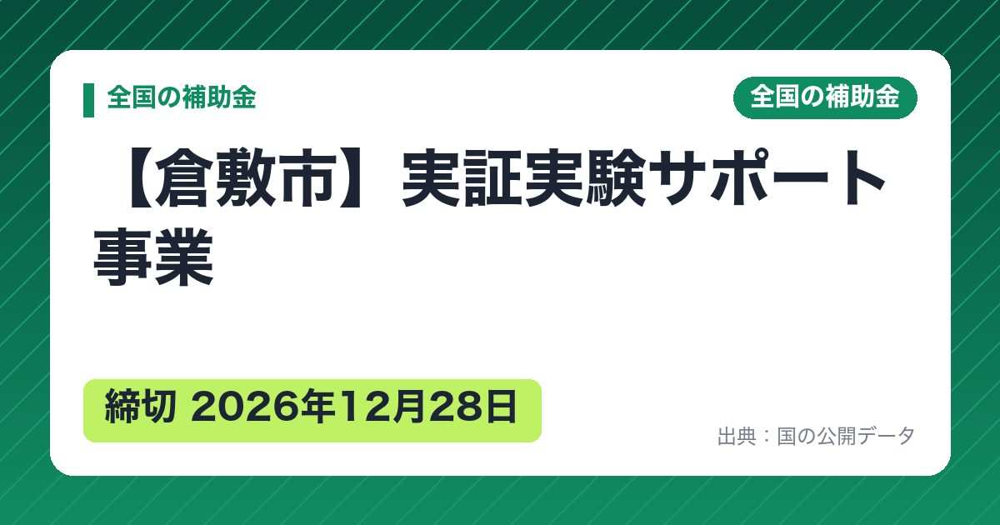

【倉敷市】実証実験サポート事業

締切 2026年12月28日｜上限 50万円
社会や地域の課題解決、豊かで便利な市民生活の実現、新たな産業の創出等につながる魅力的なアイデア・技術の早期実用化を支援するため、倉敷市内で行う先端技術等（AI、IoT、ロボット、AR・VR等）を活用した実証実験について全国から公募します。
概要
| 対象地域 | 全国 |
|---|---|
| 補助上限額 | 50万円 |
| 補助率 | 最大50万円／補助対象経費の3分の2 |
| 受付期間 | 2026年4月1日 〜 2026年12月28日 |
| 対象の従業員数 | 従業員数の制約なし |
| 利用目的 | 研究開発・実証事業を行いたい |
| 対象業種 | 漁業 / 建設業 / 製造業 / 電気・ガス・熱供給・水道業 / 情報通信業 / 複合サービス事業 / サービス業（他に分類されないもの） / 公務（他に分類されるものを除く） / 分類不能の産業 / 農業、林業 / 鉱業、採石業、砂利採取業 / 運輸業、郵便業 / 卸売業、小売業 / 金融業、保険業 / 不動産業、物品賃貸業 / 学術研究、専門・技術サービス業 / 宿泊業、飲食サービス業 / 生活関連サービス業、娯楽業 / 教育、学習支援業 / 医療、福祉 |
| 実施機関 | 実証実験補助金 |
公募の内容（原文の抜粋）
※Jグランツで本補助金の申請受付を行っておりません。申請手続き等の詳細については、以下補助金サイトをご確認ください。
実証実験サポート事業補助金サイト（倉敷市HP）
■支援の対象者
実証実験を的確に実施できる組織、人員、技術、管理能力を有する法人
（事業所の所在地は問いません。共同体での実施も可）
■サポート対象事業
倉敷市内で行う、次のすべてを満たす実証実験プロジェクト
・AI、IoT、ロボット、AR・VRといった先端技術等の活用により、社会の課題解決や、豊かで便利な市民生活の実現に資するもの
・新たな産業の創出や倉敷市の魅力向上につながるもの
・市が効果的な支援を行うことが可能なもの
※ 詳細は、補助金サイトを確認ください。
■要綱・申請・様式等
詳細は、補助金サイトを確認ください。
■問合せ先（補助金サイトを確認の上、ご連絡ください。）
倉敷市 文化産業局 商工労働部 商工課
〒710-8565 倉敷市西中新田640番地
電話番号：086-426-3405 ファクス番号：086-421-0121
申請前の準備
- GビズIDプライム（電子申請に必須・無料・発行まで1〜2週間かかることあり）：gbiz-id.go.jp
- 直近の決算書（個人事業主は確定申告書の控え）
- 事業計画（何に使い、どう売上・生産性が上がるか）
- 見積書（買う物・頼む工事の）
ほとんどの補助金は、申請時に直近の決算書（個人は確定申告書）が必要で、交付後も経費の帳簿が求められます。
広告準備に使えるサービス：
・無料の会計自動化ソフト マネーフォワード クラウド会計  （法人の帳簿・決算書づくりを自動化）
（法人の帳簿・決算書づくりを自動化）
・やよいの青色申告オンライン  （個人事業主の青色申告に）
（個人事業主の青色申告に）
全国のほかの補助金
- 「太陽光発電導入拡大等技術開発事業」の第3回公募（締切 2026年11月25日）
- 【農林水産省】中山間地域所得確保推進事業（締切 2026年11月25日）
- 「ポスト5G情報通信システム基盤強化研究開発事業（社会課題解決に向けた量子コンピュータ次世代機開発・実証の加速）」（g12-2：部素材）の追加公募（締切 2026年11月26日）
- 【事前着手】令和8年度排出削減が困難な産業におけるエネルギー・製造プロセス転換支援事業（二次公募）（事業Ⅱ/紙パルプ・化学・セメント）（締切 2026年11月27日）
- 令和8年度排出削減が困難な産業におけるエネルギー・製造プロセス転換支援事業（二次公募）（事業Ⅱ/紙パルプ・化学・セメント）（締切 2026年11月27日）
- 令和７年度補正 ディマンドリスポンスの拡大に向けたIoT化推進事業（締切 2026年11月27日）
- 【令和８年度】二酸化炭素排出抑制対策事業費等補助金（地域再エネ水素ステーション保守点検等支援事業）（締切 2026年11月28日）
- 令和８年度二酸化炭素排出抑制対策事業費等補助金（運輸部門等の脱炭素化に向けた先進的システム社会実装促進事業のうち、農業機械の電動化促進事業）（締切 2026年11月30日）